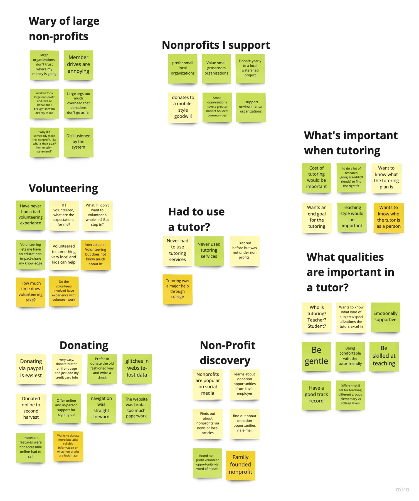
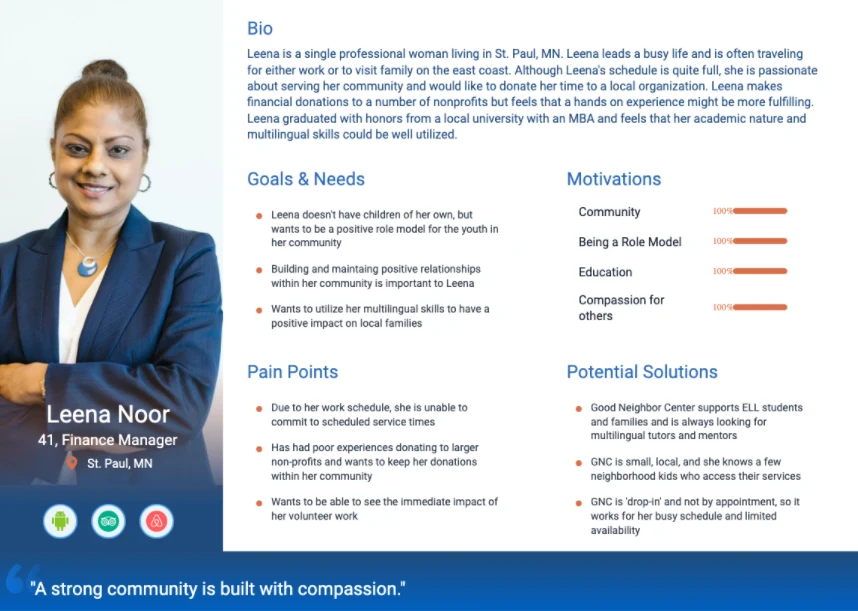
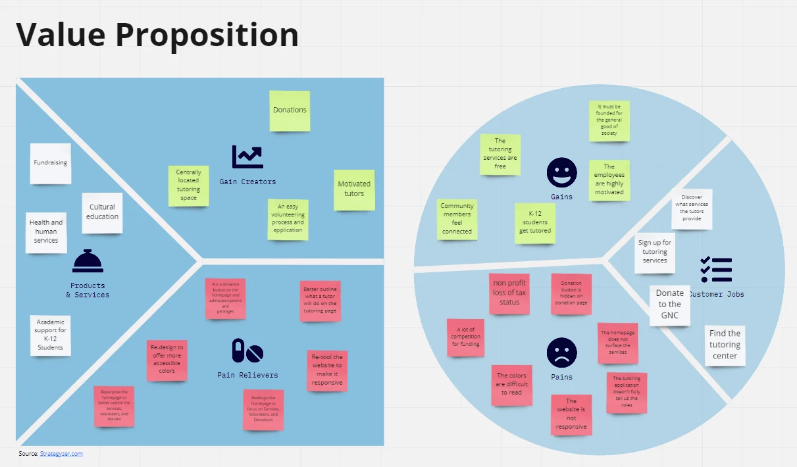
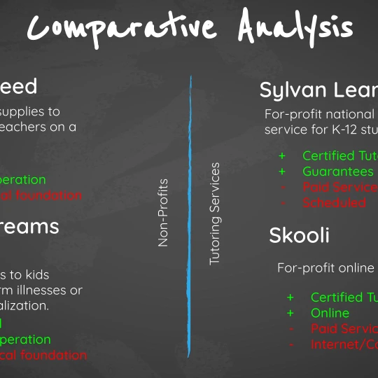
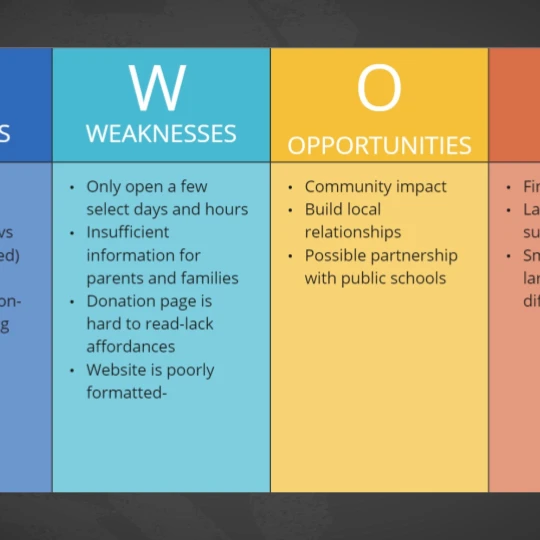
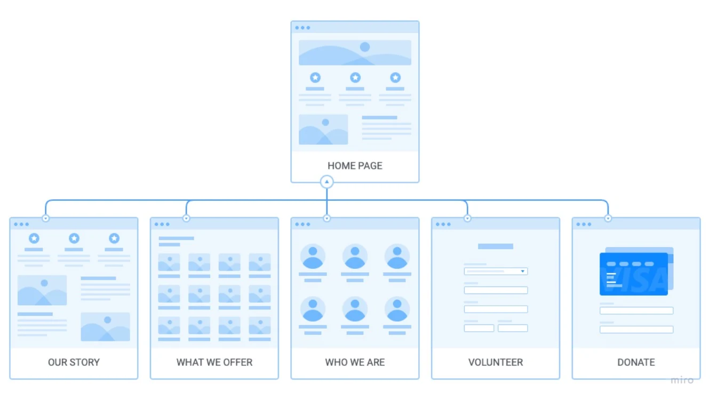
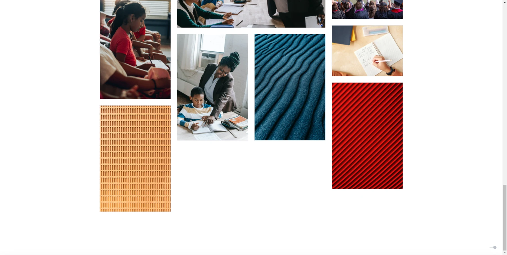
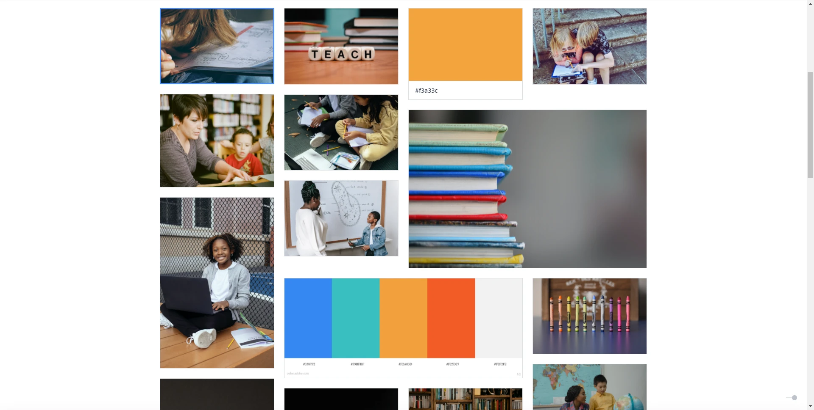
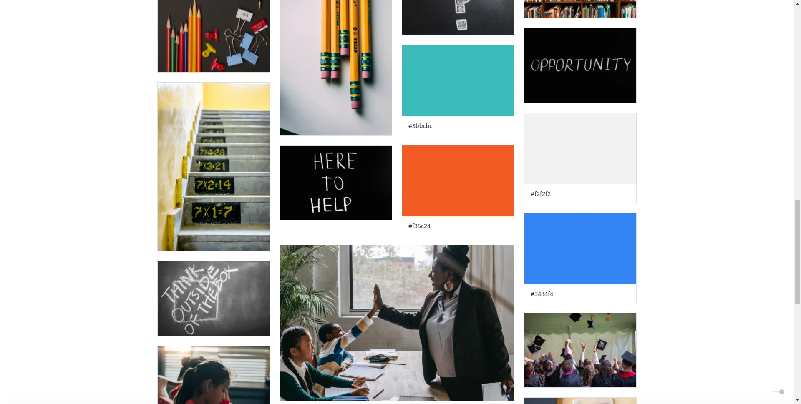
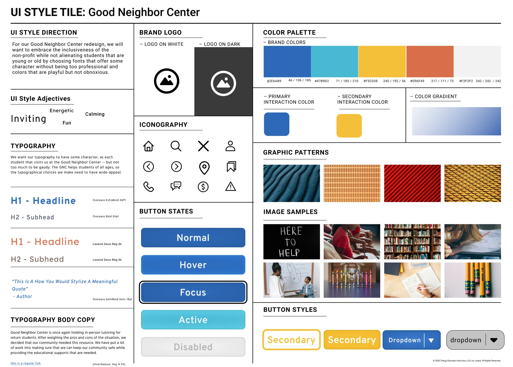

Overview & problem
The Good Neighbor Center supports children’s studies through community tutoring. Its outdated website needed to help parents find nearby, affordable tutoring while preserving the organization’s youthful spirit. Our team redesigned the website and created a companion app concept.
My role & timeline
UX Designer, April–July 2023, with the redesign described in the source as a one-month team project. I contributed user research and testing and developed concepts for the volunteering function across the website and app.
Interviews: 10 participants
We interviewed 10 people of different ages and backgrounds before building personas. Proximity and access mattered: participants wanted nearby tutoring at low cost. Prior experiences with nonprofit organizations were generally positive.

Key findings
Participants preferred supporting small local organizations; wanted quick, easy donations; and needed transparency about where money goes. Tutoring also carried an emotional component: parents wanted detailed information before committing to a tutor or service.
Personas & value proposition
Three personas from interviews and workshops guided product development. The value proposition connected three needs: volunteers discovering opportunities, parents learning about services, and philanthropists donating so students can continue receiving free tutoring.




Information architecture & sitemap
The sitemap organized the center’s purpose, story, people, volunteering, and donations. It helped users navigate toward the information and actions relevant to them.

Style tile & wireframes
The style tile established a clear visual direction. Sketches and low- and high-fidelity wireframes developed through roughly two to three iterations. The fixed header included Our Story, What We Offer, Who We Are, Volunteer, and Donate. The homepage offered Free Tutoring, PayPal donations, supplies donations, and additional ways to contribute, with matching mobile navigation.




UI design & companion app
After usability issues were resolved, we designed the webpage and app concept in Figma. Bright, vibrant colors retained the original identity. A filing-tab treatment on the active page created a bookmark-like navigation cue.
Outcome & takeaways
The project confirmed donations, volunteers, and services as the highest priorities. Small community organizations need visibility and support; a successful redesign must meet the needs of parents, volunteers, donors, and students. The companion application remains a design concept.